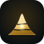

按你的想法：深金、中金、浅金三道渐变旋臂，绕着中间一颗发光的核旋转。三道金，依次是地层、矿石、金属，也就是人类用矿的三个阶段；中间最亮的核是 AI，矿业几千年的积累汇聚成智能。三曲纹是人类最古老的符号之一，约公元前 3200 年就刻在爱尔兰纽格兰奇墓的石头上；旋涡又像钻头向下、星系旋转：古代和未来，在同一个图形里。
三道金围绕一个核心，动感强，适合做 App 图标和数字界面，一眼就是“金”和“核心”。旋臂之间留有空隙，中心是实心的核，不会连成圆环，也就避开了上游品牌约束里的环形 O。

一座山，三层地层，山腰里藏着一颗矿核，静而稳，一眼就是“矿山”。两者用同一套金色配比，任选其一，品牌色和组合标都能直接沿用。
· 三道金：地层 → 矿石 → 金属（深 → 浅）
· 旋转：从古至今，一直在运转的产业
· 中心的核：AI，所有积累汇聚的地方
· 三曲纹：约 5200 年前的古老符号，象征循环与生生不息